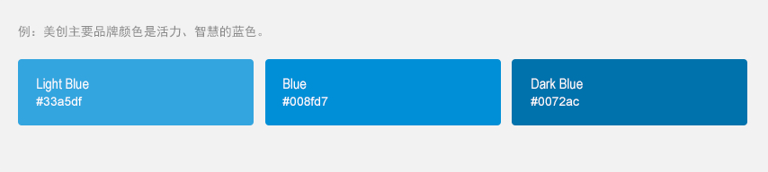
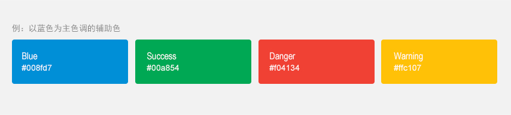
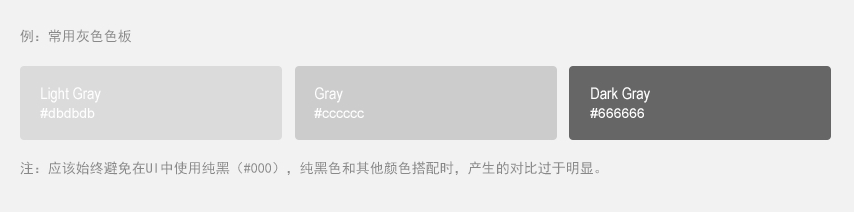
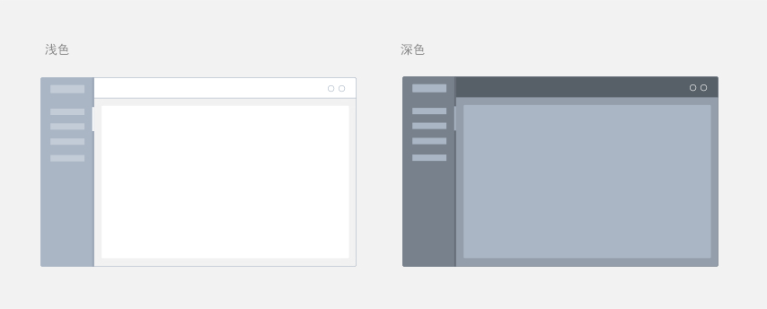

导航
01
02
03
04
05
06
07
08
09
10
03
色彩
Color
配色选择
配色的选择分为4个维度：
美创战略文化
目标用户、美创可能会有N多个产品，每一个产品针对的目标用户层级可能会有很大的差别。
使用场景、产品的使用场景不同，色彩的选择也会有所差别。
竞品、对于竞品的颜色一般是采取两种措施，避免或者相接近。
配色组成
1.主色，一种色调，同色系或邻近色，限制在3种之内。 （注：根据产品，用户场景等因素会有不同的主色调选择）

2.辅助色，可选多种色系，颜色限制在4种之内。可选取饱和度稍高的颜色， 以主色调的对比色、邻近色、互补色等等作为选择方向的参考。 这类色彩起到传递功能信息、代表某种状态等作用。

3.中性色，是指由黑色、白色及黑白调和的各种深浅不同的灰色系列，中性色不属于冷色调 也不属于暖色调，它可以起到中和剂的作用。一般用于文本、背景和边框颜色。通过运用不同的中性色， 来表现层次结构。除了黑白灰之外，也可选取与主色相关的其他单色，邻近色和互补色。 最后通过调节这些颜色的饱和度和明度来增加色彩对比和活力。

主题
主题是对应用提供一致性色调的方法。样式指定了表面的亮度、阴影的层次和字体元素的适当不透明度。 为了提高应用间的一致性，提供两种主题选择：
